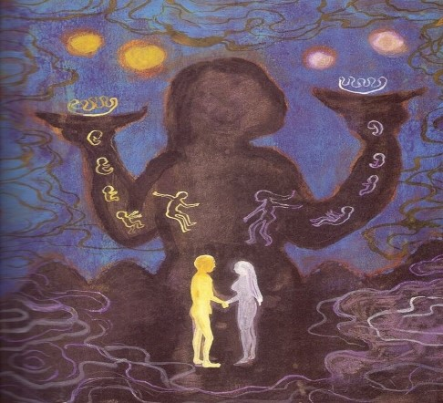

「창세가」원문분석

「창세가」는 함경남도 지역에서 전승되던 서사무가.
1923년 당시 함경남도 함흥군 운전면 본궁리에서 여무 금쌍돌이가구연한 것을 손진태가 채록하여 『조선신가유편』에 수록한 것이다.
줄거리
하늘과 땅이 나뉘지 않은 상태였다가 하늘이 가마솥 뚜껑처럼 볼록하게 도드라지자 그 틈새에 미륵이 땅의 네 귀에 구리 기둥을 세워 천지가 분리되었다.
이 시절에는 해와 달이 둘씩 있었는데, 미륵이 해와 달을 하나씩 떼어 북두칠성과 남두칠성 그리고 큰 별, 작은 별들을 마련했다. 미륵은 칡넝쿨을 걷어 베를 짜서 칡 장삼을 해 입었다.
그런 연후에 물과 불의 근본을 알아내기 위하여 쥐의 말을 듣고 금덩산으로 들어가서 차돌과 시우쇠를 톡톡 쳐서 불을 만들어 내고, 소하산에 들어가서 샘을 찾아 물의 근본을 알아내었다.
미륵이 금쟁반․은쟁반을 양손에 들고 하늘에 축수하여 하늘로부터 금벌레․은벌레를 다섯 마리씩 받아, 각각 남자와 여자로 변하여 다섯 쌍의 부부가 생겨나 인류가 번성하게 되었다.
미륵이 인간 세상을 다스리고 있을 때에 석가가 등장하여 미륵에게 인간 세상을 내놓으라 했다. 미륵은 석가의 도전을 받고 인세 차지 경쟁을 하게 되었다.
미륵이 계속 승리하자 석가는 잠을 자면서 무릎에 꽃을 피우는 내기를 제안하고, 미륵이 잠든 사이에 미륵이 피운 꽃을 가져다 자기 무릎에 꽂아 부당하게 승리한다.
미륵은 석가에게 인간 세상을 내어주고 사라진다. 석가의 부당한 승리로 말미암아 인간 세상에는 부정한 것들이 생겨나게 되었다.
내용
① 천지의 분리 :
하늘과 땅이 나뉘지 않은 상태였다가 하늘이 가마솥 뚜껑처럼 볼록하게 도드라지자 그 틈새에 미륵이 땅의 네 귀에 구리 기둥을 세워 천지가 분리되었다.
② 해와 달의 조정 :
이 시절에는 해와 달이 둘씩 있었는데, 미륵이 해와 달을 하나씩 떼어 북두칠성과 남두칠성 그리고 큰 별, 작은 별들을 마련했다.
③ 의복의 마련 :
미륵은 칡넝쿨을 걷어 베를 짜서 칡 장삼을 해 입었다.
④ 물과 불의 발견 :
그런 연후에 물과 불의 근본을 알아내기 위하여 쥐의 말을 듣고 금덩산으로 들어가서차돌과 시우쇠를 톡톡 쳐서 불을 만들어 내고,소하산에 들어가서 샘을 찾아 물의 근본을 알아내었다.
⑤ 인류의 시원 :
미륵이 금쟁반․은쟁반을 양손에 들고 하늘에 축수하여 하늘로부터 금벌레․은벌레를 다섯 마리씩 받아, 각각 남자와 여자로 변하여 다섯 쌍의 부부가 생겨나 인류가 번성하게 되었다.
⑥ 인세(人世) 차지 경쟁 :
미륵이 인간 세상을 다스리고 있을 때에석가가 등장하여 미륵에게 인간 세상을 내놓으라 했다. 미륵은 석가의 도전을 받고 인세 차지 경쟁을 하게 되었다.
미륵이 계속 승리하자 석가는 잠을 자면서 무릎에 꽃을 피우는 내기를 제안하고,미륵이 잠든 사이에 미륵이 피운 꽃을 가져다 자기 무릎에 꽂아 부당하게 승리한다.
미륵은 석가에게 인간 세상을 내어주고 사라진다. 석가의 부당한 승리로 말미암아 인간 세상에는 부정한 것들이 생겨나게 되었다.
내용 분석
① 「창세가」는 하늘과 땅이 생기면서 우주가 생겼고, 하늘과 땅이 분리되는 과정을 진정한 창세로 보는 것이다.
② 「창세가」에서는 처음 해와 달이 둘었는데 각각 하나씩 떼어서 별을 만들었다고 말고 있다. 하늘의 중심을 해와 달로 보는 고대의 동양적 우주관이 담겨있다고 볼 수 있다.
③ 하늘에서 떨어진 벌례들이 변해 인간이 되었다는 내용은, 한국 민족의 의식 속에 천손이라는 의식이 담겨있다고 볼 수 있다.
④ 「창세가」에서는 인간 세상을 차지하기 위해 다투고 있는 데, 이는 현세의 삶을 보다 중시하는 한국적 가치관이 담겨있다고 볼 수 있다.
⑤ 미륵과 석가의 경쟁은 꽃을 피우기 위해 일하는 경정이다. 무력에 의한 경쟁이 아니라 지혜의 경쟁이라고 할 수 있다.
⑥ 부정한 방법에 의한 승리의 결과는 말세의 저주인 것이다. 이를 통 해 볼 때 「창세가」는 부정을 멀리하라는 도덕적 교훈이 담겨 있고, 또한 불교에 대한 비판의식이 담겨있다고 볼 수 있다.
문학사상
① 신화소는 소박하고 단순하나, 인간 세상이 태초에 어떻게 형성된 것인가를 보여주고 있어, 이 신화를 만든 집단의 사고를 이해하는 데 많은 시사를 준다.
② 인간 세상은 미륵이라는 창조신에 의하여 혼돈에서 질서로 형성되었고, 불의 시원은 마찰에 의한 것이 아니고 충돌에 의한 것이라는 점에서 남성적·동적 문화의 성격을 말해준다.
③ 인류의 시원이 하늘에 있고, 벌레로부터 진화하였으며, 최초의 인간은 우열이 없었다는 점에서 진화론적 인류 기원과 평등사상을 말하여 주고 있다.
④ 미륵과 석가와의 경쟁화소(競爭話素)에서는 통치자는 지혜가 있어야 하고, 양심이 바른 존재라야 되며, 인세의 선악은 통치자의 덕성에 좌우된다는 사고를 보여 주고 있다.
⑤ 이 신화는 우리나라 천지개벽과 인세 시조의 기원을 말하고 있어 매우 중요한 가치를 지닌다.
관련동영상
참고문헌
1. 한국민족문화대백과사전(창세가(創世歌)
2. 박용진,한국 창세신화의 특징에 관한 연구,pp.50~53.